Руководство по летной эксплуатации ВС Airbus 319/320/321 (AFM/FCOM): вопросы и ответы
Системы семейства Airbus A319/A320/A321: автопилот, электроснабжение, топливо, гидравлика, двигатели и другие подразделы AFM/FCOM.
Сначала попробуйте ответить самостоятельно, затем раскройте вопрос и сравните ответ с ключом базы. Здесь нет счёта, результаты чтения не меняют прогресс тренировок.
Проверить себя в тренировке →Ответы приведены по тестовой базе MY FREIGHTER с задокументированными исправлениями. Это материал для повторения, а не самостоятельное руководство по эксплуатации. Правовые вопросы включают нормы Узбекистана. Об источнике. Ссылки на полный PDF требуют интернета.
(A) Aircraft General
1What is the wing span of A320 CEO?
2What is the wing span of A320 NEO?
3What is the wing span of А321 NEO?
4What is the A320/A321 body diameter?
5What is the A320/A321 landing gear base (main to main)?
6What is the base between nose and main landing gear of А321 NEO?
7What is the aircraft length of А321 NEO?
(B) Air conditioning/Pressurization/Ventilation
1Conditioned air is distributed to:
2The temperature in the CABIN can be selected from:
- C. The AIR COND panel and the Forward Attendant Panel (FAP)
3The temperature in the FLIGHT DECK can be selected from:
4During cruise, the cabin crew can modify each cabin zone temperature that is selected from the cockpit, with a limited authority of:
5Bleed air supplied from the APU (APU bleed valve open), the pack flow:
6Engine flow demand, when the heating or cooling demand in one zone cannot be satisfied:
7Is it permitted to use packs and ground LP simultaneously?
8What happens to the pack flow control valves during engine start?
9Under what conditions should the pack flow controller be set to LO?
- A. With a low passenger load to reduce bleed air demand and improve fuel efficiency
10With APU BLEED ON and engine BLEED switches ON with engines running, what is the position of the engine bleed valves?
11Pressurization is normally automatic. Can you control it manually?
- A. Yes, MODE SEL pushbutton to MAN and MAN V/S CTL toggle switch
12Under what conditions should the pack flow controller be set to HI?
- C. With a high passenger load in hot conditions in order to reduce the cabin temperature
13What is the function of the Ram Air Valve?
- B. Emergency smoke removal and ventilation in the event of dual pack failure
14Placing the EXTRACT push button to OVRD:
- B. Places the avionics ventilation system in the closed configuration
15What limitation is associated with the ram air valve?
- A. Do not open, if cabin pressure is greater than 1 psi
16With the pressurization system in the automatic mode, which valves are closed when the ditching pushbutton is selected on?
- A. the outflow valve, the emergency ram air inlet, the avionics ventilation inlet and extract valves, the pack flow control valves, and the FWD cargo outlet isolation valve
17Cabin altitude indication pulses on ECAM:
18When altitude of aircraft is increasing, the outflow valve going towards position.
19How many trim air valves are there?
- B. Three: one each for the cockpit zone, the forward cabin zone, and the aft cabin zone
20What position do the pack valves go to in the event of a loss of the bleed system pressure?
21Normal position for the avionics ventilation system while airborne:
22How many outflow valves are installed on the aircraft?
23How many packs are installed on the aircraft?
24It is allowed to use HP ground unit when APU supplies bleed air?
25Zone temperature selector in 12 o'clock position corresponds to:
26How many automatic pressurization systems operate at a time?
27The pressurized areas of A320/A321 are:
28The controller automatically limits the maximum cabin pressure to:
29How many automatic pressurization systems are installed on the aircraft?
30The Ram Air inlet flap:
- A. Remains closed during takeoff and landing to avoid ingestion of foreign matter
31Two independent pneumatic safety valves prevent cabin pressure from:
- A. going too high (8.6 PSI above ambient) or too low (1 PSI below ambient)
(C) Auto Flight
1What information is supplied by the IR's and displayed on the PFD?
2A/THR in white color on the FMA means that A/THR is:
3What does the MCDU message “CHECK DATA BASE CYCLE” mean?
- A. The current date does not match the effective date of the active database
4Short term actions are actions through:
5Long term actions are actions through __:
6What does the MCDU “CHECK WEIGHT” message mean?
7The A/THR in CLB detent providing maximum available CLB thrust. Is it possible to obtain some additional thrust?
- B. Yes, by moving the thrust levers forward from the CL detent
8What is the minimum height for use of the Autopilot after liftoff?
9Can the Autopilot be used for OEI Approach and Autoland?
10During the takeoff phase the AP/FD SRS Mode:
- A. Provides guidance to maintain speed target of V2+10kt up to acceleration altitude
11What is the minimum height for use of A/P when CAT 2 or CAT 3 is not displayed on the FMA?
12What is Alpha floor protection?
- A. The protection against aircraft stall and windshear. It has priority over all other protections
13When Alpha floor is activated, what power setting is automatically commanded and what FMA annunciation would appear in Column one?
14During NPA with FINAL APP mode in active and AP on, aircraft descends below MDA. What will happen to FMGC?
- A. At MDA -50 ft, if the AP is still engaged, DISCONNECT AP FOR LDG message pulses on the FMA to remind the flight crew that automatic landing is not available
15Holding the instinctive disconnect pushbutton on thrust levers for more than 15 seconds will:
- C. Disengage the A/THR (including Alpha Floor) for the remainder of the flight
16During the flight with active A/THR, the speed knob is pulled and turned to a selected speed which is lower than Alpha Prot. What speed will be maintained by the aircraft?
17Default managed climb speed above 10,000 feet:
18The FMGS has following modes of operation:
- A. Four modes: Dual mode, Independent mode, Single mode, Back-up navigation mode
19If two AP’s are engaged, what FMGC is master?
20If no AP is engaged, and the FDs 1+2 are on, what FMGC is master?
21If no AP/FD is engaged, which FMGC controls the Auto Thrust?
22OPP FMGC IN PROCESS message is displayed on both MCDU scratchpads. FMGC in:
23What is the Dual mode of FMGC operation?
- A. Both FMGCs are synchronized: each performs its own computations and exchanges data with the other through a crosstalk bus
24The INDEPENDENT OPERATION message is displayed on both MCDU scratchpads.
- A. Both FMGCs work independently and are linked only to peripherals on their own sides of the flight deck (“onside” peripherals)
25The “MAP NOT AVAIL” message displayed on ND indicates that:
- B. Either associated FMGC has failed or delivered an invalid aircraft position
26In what case the "NAV ACCUR UPGRAD" (or DOWNGRAD) message appears on the MCDU and the ND display?
- A. When one FMGC changes the NAV accuracy from LOW to HIGH (or HIGH to LOW)
27Radio navaids may be tuned in several ways:
- A. Three ways: Automatically by FMGC; Manually via the MCDU RAD NAV page; manually via the RMP
28Is it possible to manually tune radio navaids on the MCDU RAD NAV page and the RMP simultaneously?
29MCDU scratchpad message: “SPECIF VOR-D UNAVAIL” appears when:
- A. The VOR or VOR/DME to be autotuned has previously been deselected by the flight crew
30MCDU scratchpad message: “RWY/LS MISMATCH” appears when
- C. The LS frequency entered on the RAD NAV page does not match the LS associated with the destination runway
31With FPV on, FD’s off, will the FD bars be automatically restored on the PFD?
32When the aircraft overflies a flight plan discontinuity with the NAV mode:
- A. The NAV mode automatically reverts to the HDG (TRK) mode
33Choose the correct FMA during MANAGED descent:
34The yaw bar is displayed in green on the PFD:
- A. In RWY mode on takeoff, in FLARE and ROLL OUT modes at landing, below 30 ft RA and if a localizer signal is available
35The energy circle symbol on the ND is:
- A. Only displayed if the lateral guidance mode is HDG or TRACK
36Choose the correct FMA during climb:
37Energy circle symbol on the ND represents:
38In case of engine failure after V1 bank angle is limited to up to maneuvering speed minus:
39The AP/FD TCAS mode:
- A. Guides the A/C through autopilot in case of a TCAS RA
40How does the AP/FD TCAS mode become active?
- B. It automatically engages when a Resolution Advisory (RA) is triggered
41How does a flight crew knows that the AP/FD TCAS mode will be available in case of Resolution Advisory?
- C. By checking the FMA to have TCAS mode armed in blue in case of TA
(D) Communication
1An aircraft is equipped with VHF and HF communication systems
2To transmit, the flight crew uses the Audio Control Panel (ACP) to select:
3How many Radio Management Panels (RMPs) can be installed in the A320 cockpit to tune communication frequencies?
4You can select frequency for VHF 1 using RMP 1 only
5If you press the guarded NAV button, the MCDU RAD NAV pages are inhibited and the RMP controls navaid tuning.
6How can you get the ground staff attention outside the aircraft?
- A. Use MECH pushbutton on the overhead CALLS panel which sounds an external horn
7The Satellite Communication (SATCOM) system allows the exchange of information between the aircraft and a ground network. The system provides:
8The audio switching selector knob allows replacement of ACP1 or ACP2 with ACP3:
9On the ground, the crew can energize the CVR manually by pressing the GND CTL pushbutton.
10The VHF 3 transmission key (CALL p/b) flashes amber. What does it indicate?
11Look at the picture. SEL light is illuminated on both RMPs, why?
12The RMP’s “LOAD” key allows the crew to:
- A. load an VHF frequency to the STBY/CRS window from the ATC CPDLC message
13In case of RMP 2 failure, VHF 2 is lost.
14Look at the picture. An aircraft is electrically supplied. What happened to RMP?
15If VHF 1 is selected on RMP 2, amber SEL light illuminates:
16When the aircraft is in the Emergency Electrical Configuration:
17With the AUDIO SWITCHING knob in the CAPT 3 position, the captain uses his acoustic equipment on ACP3.
18The Emergency Locator Transmitter (ELT) transmits an emergency signal in case of impact:
(E) Electrical
1Normal priority for supplying electrical power to AC busses is:
2In normal configuration, the electrical power system provides _ power.
3The electrical power system is constituted of:
4Engine driven generators (GEN 1, GEN 2) supply power.
5The APU generator (APU GEN) supplies power.
6The hydraulic system drives an emergency generator.
7The hydraulically driven emergency generator supplies power.
8Each engine-driven generator supplies its associated directly:
- A. AC BUS
Буквы вариантов приведены к A, B, C… по порядку; исходные буквы сохранены отдельно.
Источник: PDF, стр. 157 ↗9In flight DC BUS in normally supplied.
10In case of a GEN1 or GEN2 failure it will be automatically replaced by:
11The RAT is connected directly (mechanically) to the Emergency Generator.
- B. False, The RAT powers the blue hydraulic system, which drives the Emergency generator by means of a hydraulic motor
12The emergency generator supplies power as long as:
- B. The RAT is deployed, and the aircraft speed is greater than 100kt
13The BAT FAULT light will illuminate when:
14You enter a dark cockpit, what action is necessary before checking the battery voltage?
15Having the APU started and EXT PWR pushbutton ON, how can you get the APU generator to power the electrical system?
- B. By pushing the EXT PWR pushbutton, thus disconnecting the external power
16The purpose of AUTO BUS TIE is to allow either engine-driven IDG to automatically power both main AC buses in the event of a generator loss until either ground power or the APU generator is activated.
17Limitations associated with disconnecting an IDG:
- C. Never disconnect an IDG unless the engine is running, nor push the IDG disconnect pushbutton for more than 3 seconds
18What is the significance of the green circuit breakers?
19The RAT & EMER GEN red FAULT light illuminates on overhead panel, if:
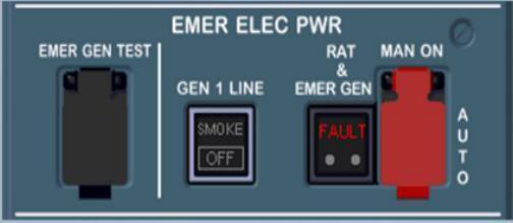
Ответ по ключу базы- A. The EMER GEN is not supplying electrical power when AC BUS 1 and AC BUS 2 are not powered
20How many times can you reset a circuit breaker?
21To perform the computer reset, the related circuit breaker must be pulled, and the flight crew must:
22Can you reconnect an IDG in flight?
23The battery charging cycle is required if during preliminary cockpit preparation the battery voltage is:
24Which communication and navigation radios are operational in the Emergency Electrical Configuration with the EMER GEN powering the system?
- A. VHF 1, HF1, RMP 1, RMP 1, VOR 1/ILS 1, DME 1 and MMR 1
25If EXTERNAL power is available and within limits:
- B. The green AVAIL light will illuminate on the EXT PWR push button
26What source of power may be used for battery charging cycle?
(F) Equipment
1Pressing the HORN SHUTOFF p/b on the EVAC panel:
2When the door arming lever is in the ARMED position, opening the door from the outside will:
3You want to open the passenger door. Whilst lifting the control handle the white light illuminates. What does it mean?
4The FLOOR PROXIMITY EMERGENCY ESCAPE PATH will illuminate in an emergency if:
- B. The strips are photoluminescent. No action is required
5What are the indications that PBE oxygen has been depleted?
- A. The hood collapses to the point that it touches your face or by a flashing red light in addition to flashing green light
6Most Pushbuttons in the cockpit are color-coded and next colors are used to indicate the status of a system:
7What are the “Momentary Action” pushbuttons?
- B. These pushbuttons do not remain pressed in when pressed
8Two dots on the pushbutton indicate:
- B. That corresponding part of the pushbutton is not used
(G) Fire Protection
1Avionics Compartment does not contain an installed fire extinguishing system:
2The aircraft has dual fire detector loops to ensure that a fault in one fire loop will not affect fire detection capabilities.
3If there is an APU fire in flight the APU:
- B. Must be shut down manually and the agent manually discharged
4Fire protection for the cargo compartments includes:
- A. Two fire bottles supplying multiple nozzles (nozzle quantity depends on the option)
5The engine extinguisher squibs are armed when:
6When the APU FIRE SWITCH is released out:
- C. The APU bleed and crossbleed valves are closed, the APU generator is deactivated
7DISCH light on either the engine or APU fire agent switches indicates:
8When the aircraft is on the ground and the APU is started on battery power only, is fire protection available?
- A. Yes, the APU will initiate an auto shutdown and discharge the extinguishing agent
9How many fire extinguishing bottles are available for fighting an APU fire?
10During APU fire test you see these indications. Is it correct
- A. Yes, it is correct for APU fire test with BATT ON only
11Can the APU FIRE test be performed using battery power only?
12Which of the following have automatic fire extinguishing systems
13The A320 FWD Cargo Compartment smoke detection system consists of:
- B. Two smoke detectors and a two-channel smoke detection control unit
14The A321 AFT Cargo Compartment smoke detection system consists of:
- A. Six smoke detectors and a two-channel smoke detection control unit
15What is it indicated by a missing red APU thermal plug during an exterior preflight?
16If the lavatory smoke detector detects smoke:
- C. Warnings will be generated in the cockpit and in the cabin
17Are there any warnings to alert ground personnel when there is a fire in the APU compartment?
- C. Yes, the external fire warning horn will sound and the APU red fire light will illuminate on the external power panel
18How many halon fire extinguishing cylinders are there per engine?
19If AFT or FWD Cargo Compartment smoke detectors detect smoke:
- C. The crew must depress the appropriate agent DISCH switch
20The APU is provided with automatic fire extinguishing:
(H) Flight Controls
1Which of the following statements is always true when operating in alternate law?
- A. Extending the landing gear will place the aircraft in direct law
2Can the aircraft be controlled with a loss of all electrics?
3The amber SPEED BRK is pulsing on the EWD. What does it mean?
- C. Speed brakes are extended and engines are not at idle
4Which computer normally commands the operation of the elevators and horizontal stabilizer?
5Sidesticks provide electrical signals to the flight control computers. If both sidesticks are operated:
6When the flaps are extended, the ailerons (A320):
7When the flaps are extended, the ailerons (A321):
8Two control surfaces that have mechanical backup are:
9Horizontal stabilizer trim automatically resets to zero degrees after landing.
10What will happen with flaps or slats in case of asymmetry or overspeed?
11In Pitch Normal Law and Flight Mode, the Pitch Trim is:
12TOGA thrust is provided regardless of thrust levers position when protection is active.
13Minimum, maximum and maneuvering speeds indicated on PFD in flight are provided by:
14Speeds indicated on MCDU PERF pages in flight and on the ground are calculated by:
15The Flight Control Flight Mode changes to Flare Mode when the aircraft passes:
16How does the flight control Flare Mode operate when the aircraft descends through 30ft RA (A320):
- A. the system begins to reduce the pitch attitude to 2 ° nose down over a period of 8s
17If the pilot maintains sidestick full forward, the aircraft will:
- C. Significantly overshoot VMO/MMO. At approximately VMO+16 / MMO+0.04, the pitch nose- down authority smoothly reduces to zero
18When does the Flight Control Flight Mode become active?
- B. From liftoff during takeoff until Flare Mode engages at landing
19Roll control in NORMAL LAW is achieved by:
20In normal law, what is the maximum bank angle you can reach with the side stick fully deflected?
21Rudder deflection will depend on speed
22Maximum rudder deflection is reached at:
23How many slat surfaces per wing are available?
24How many flap surfaces per wing are available?
25Each wing of A321 NEO has the following lift augmentation devices:
26How many speed brake surfaces available per wing?
27What will be speedbrakes surface deflection with autopilot engaged and speedbrake lever in full back position?
28If only one main landing gear is compressed:
29When both main landing gear is compressed:
30How many ground spoiler surfaces are available per wing?
31MAN PITCH TRIM ONLY red message on PFD indicates that aircraft is in:
32USE MAN PITCH TRIM amber message on PFD indicates that aircraft is in:
33How can you recognize that the aircraft is in Alternate law by inspecting PFD indications:
- A. Amber crosses (X) will replace green double bars “=” on the PFD. Va prot and Va max indications are replaced by Stall Warning Speed (Vsw), which is defined by the top of a red and black strip along the speed scale
34Low speed stability. Aural alert “STALL” will NOT be activated in the law
35If both ELACs fail, what controls the elevator and stabilizer?
36When does the sideslip indicator change to a blue Beta target?
- A. CONF 1, 2 or 3 is selected, and any engine N1>80%, and the difference between the engines N1’s exceeds 35%
37High and low speed stability may be available in alternate law.
38With autopilot engaged, either sidestick can be moved freely.
- B. False, applying force on either sidestick beyond predetermined threshold will cause the autopilot(s) to disengage
39Flight Control system Rotation Mode is active:
- B. From 70kt during takeoff roll until 10s after liftoff and pitch attitude is above 8°
40Flight Control system Rotation Mode is designed to:
41The load alleviation function (LAF) permits to alleviate:
42The LAF is available when the aircraft is:
43The function of LAF is achieved through the upward deflection of:
- A. two ailerons only, or two ailerons associated to the spoilers 4 and 5
В PDF отсутствуют буквы вариантов; они восстановлены по порядку строк.
Источник: PDF, стр. 170 ↗(I) Fuel
1Refueling is possible if aircraft batteries are the only source of power.
2With the center tank pump mode SEL switch in AUTO; the center tank pumps:
3What is the purpose of a Fuel Tank Inerting System (A320 NEO/A321)?
4Refueling of aircraft is available from the:
5Refueling can be performed automatically and manually.
6What is the purpose of surge tank?
- A. To protect the system against overpressure and thermal expansion
7How can you monitor the amount of fuel in the surge tank?
8Fuel transfer from the outer tank to the inner tank occurs when:
- A. The inner compartment quantity decreases to 750 kg
9The Fuel Used indication on ECAM is reset:
- B. Automatically at engine start on the ground
В PDF отсутствуют буквы вариантов; они восстановлены по порядку строк.
Источник: PDF, стр. 172 ↗10The fuel tanks of A320 CEO/NEO are getting empty in the following sequence:
11The message CTR TK FEEDG appears in the MEMO. What does this mean?
12An amber line appears across the last two digits of the ECAM FOB indication when:
13Some of the fuel supplied to each engine goes from the high-pressure fuel line in that engine, through the IDG heat exchanger, to the fuel return back to the outer fuel tank.
14Why do the center tank pumps stop automatically when then slats are extended for takeoff?
- C. To ensure that the engines are fed from the wing tanks for takeoff (feeding segregation)
15After engine shutdown, what are your actions to close the fuel transfer valves?
- C. No action is required. The valves will close automatically during the next refueling
16The green message OUTER TK FUEL XFRD appears on the ECAM MEMO display. What does it mean?
- C. Fuel is transferring from the outer tank to the inner tank
17How does the fuel transfer from the outer to the inner tanks?
- C. The transfer valve is opened automatically by the low-level sensor in the inner tank
18How does the fuel from Additional Center Tanks (ACT’s) being used?
- A. The fuel transfers automatically or manually to Center Tanks, then to Wing tanks
19What is the A321 Fuel Feed Sequence in order from first tank to be deployed to the last one?
20The wings of A321 NEO have:
21The fuel is stored in the (A321NEO):
- A. the center tank, wing tanks and additional center tanks
(J) Hydraulic
1Which hydraulic systems have EDP?
2Which hydraulic system can be pressurized by RAT?
3The hand pump supplies yellow system pressure to the:
4The PTU enables:
- A. The green and yellow system to pressurize each other automatically
5Which hydraulic system provides power for gear extension/retraction.
6The aircraft's three hydraulic systems are normally pressurized by:
7Which hydraulic system is normally pressurized by the electric pump?
8The aircraft has three continuously operating hydraulic systems. Normal system operating pressure is:
9Hydraulic system pressure when powered by the RAT is:
10Hydraulic fluid can be transferred from one system to another.
11The PTU runs automatically when ΔP between YELLOW and GREEN hydraulic systems is more than 500 psi:
12Normally, air from pressurizes hydraulic reservoirs.
13The hydraulic reservoirs maintain a high pressure to prevent their pumps from:
14The RAT is capable of powering a pump which will pressurize:
15How can the YELLOW hydraulic system be pressurized?
- A. An engine driven pump, an electric pump, the PTU using the green system and a hand pump for the cargo doors
16The flight crew pushes RAT MAN ON switch on hydraulic panel. How can be it stowed?
- C. It can be stowed only when the aircraft is on the ground
17Which combination of DUAL HYDRAULIC systems LO PR failure will leave Flight Controls in NORMAL LAW?
(K) Ice and Rain Protection
1An A320/A321 has the following anti-icing systems:
2The following critical areas of the aircraft are heated by hot air:
- A. Three outboard leading-edge slats of each wing and engine air intakes
3When the engine anti-ice is on:
4Probe heat comes on automatically when:
5Can the probes be heated manually?
- C. Yes, the flight crew can push the PROBE/WINDOW HEAT p/b
6Pitot heating logic on the ground:
- C. Starts at a low level. The changeover to normal power occurs automatically in flight
7On the ground with WING A.ICE p/b switch ON:
- A. WAI control valves open for 30 seconds (test sequence)
8Are there any WING ANTI ICE indications displayed on ECAM?
- B. WING A. ICE appears on the ECAM MEMO page in green. In addition for NEO aircraft WAI green memo comes on top of EWD when the thrust levers are in TOGA or FLX/MCT detent
9ICE NOT DET memo appears on the ECAM MEMO page in green if:
10If one engine anti-ice system fails, the second one takes over and provides anti-icing for both engines.
11Window heating comes on automatically when:
12On the ground, the windshield heating operates as follows:
- C. Starts at a low level. The changeover to normal power occurs automatically in flight
13The drain masts are heated by:
14What is the maximum speed for windscreen wipers operation?
15The Engine Nacelle is anti-iced by:
16A BOOST ICE PROT indication is displayed on the ENG SD page (Leap-1A). It indicates:
- B. That Hot Air is provided to the booster to prevent ice crystal formation
17With the loss of electrical power the wing anti ice valves:
(L) Indicating/Recording Systems
1ADVISORY appears on ECAM. How is the associated parameter presented on ECAM SD:
2What does the Advisory indication mean?
3Look at the speed scale and name presented speeds.
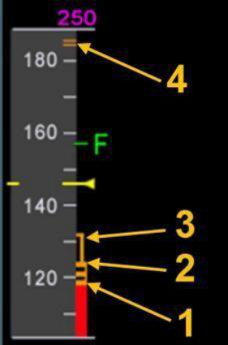
Ответ по ключу базы- A. 1- Vα MAX; 2- Vα PROT; 3- VLS; 4- VFE NEXT
4Which modes of ND can provide a weather radar image?
5If a PFD fails, does anything happen automatically?
- A. The image automatically transfers to the display formerly occupied by the ND
6On which modes of ND the VOR/ADF pointers can be displayed?
7Look at the speed scale and name presented speeds:
8Look at the speed scales. Which flight control law corresponds to these presentations?
9Course information from the ILS1 receiver will be displayed:
- A. On CM1 PFD and CM2 ND provided that both LS pushbuttons are selected ON
10In what cases a DU will display an “INVALID DATA” message?
11The red VOR1 indication on the ND means:
12How many DMCs are installed on aircraft?
13After a single DMC failure, how could a crew member recover display units?
- C. Rotate the EIS DMC switch on the switching panel to replace failed DMC with DMC3
14If the lower ECAM DU fails, is there a way to retrieve that information?
- A. By pressing and holding related systems page push button on the ECAM control panel, the page will be displayed on the UPPER ECAM
15If the upper ECAM DU fails, what will be displayed on the lower DU?
16Information from the VOR1 receiver will be displayed:
- B. On the CM1 ND when the CM1 VOR bearing selector is selected to VOR
17After a normal engine shutdown, you observe a pulsing STS message. What does it mean?
- C. It is a reminder that the status page holds a maintenance message
18The upper ECAM Display Unit (DU) has failed. You want to see the DOOR/OXY page. How can you see it?
19Both ECAM screens have failed. Is it possible to get E/WD indications?
- C. Yes. Use the ECAM/ND XFR, on the SWITCHING panel, to display the E/WD page on a navigation display
20In case of a double FWC failure master caution light, master warning light, aural warnings and ECAM cautions and warnings are lost.
21VLS is the lowest speed that the autoflight system will fly the aircraft. This speed is a:
- A. Dynamic speed corresponding to the Angle of Attack (AOA)
22The Speed Trend Arrow is a dynamic information displaying the speed at which the aircraft will be in .
23The Flight Path vector (FPV) represents the lateral and vertical trajectory of the aircraft with respect to the ground. On the lateral scale, it indicates the aircraft's track. On the vertical scale, it indicates the aircraft's flight path angle.
24When the Side Stick Order indicator is displayed on PFD?
- B. After first engine start and disappears after rotation
25When is the Green Dot displayed on PFD?
26When the FPV is above the horizon line, the aircraft is:
27The Flight Director bars disappear, when the aircraft bank angle exceeds:
28The Flight Director bars disappear from the PFD when the pitch attitude exceeds:
29The Flight Director bars return to the PFD when the pitch angle returns to the region between:
30TERR mode is displayed on ND. What does the numbers in the yellow box mean?
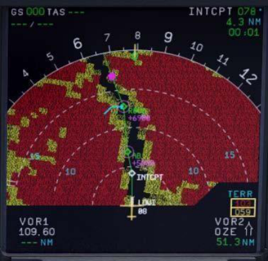
Ответ по ключу базы- A. Minimum and maximum elevations ahead of the aircraft, within the selected ND range
31When will the Flight Directors bars flash?
- A. When a reversion to the HDG V/S occurs or loss of LOC or G/S signal
32Red LOC or G/S flag appears on the deviation scale on PFD when:
33When ECAM LDG INHIBIT mode active?
34When ECAM T.O. INHIBIT mode active?
- A. As soon as thrust levers set in the TOGA or FLEX detent up to reaching 1500 ft AGL or 2 minutes after lift off
35The lower ECAM DU displays the Gross Weight (GW) in green, as soon as the flight crew starts the first engine.
36The WX RADAR tilt angle refers to the angle between:
37Magenta symbol “R” appears on the speed scale, when:
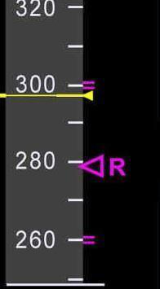
Ответ по ключу базы- B. RTA is inserted in the MCDU and aircraft is in managed speed and NAV mode
38Look at the picture. Why the Hail and Lightning icons are shown on ND?
39Look at the picture. What do magenta arcs mean on ND?
- A. REACT function indicates areas where the ability of the radar system to evaluate the weather is reduced due to severe signal attenuation
(M) Landing Gear
1Which hydraulic system supplies pressure to the landing gear system?
2The main landing gears retract:
3The nose landing gears retract:
4How many Landing Gear Control and Interface Units (LGCIUs) control the extension and retraction of the gear and the operation of the doors?
5Each main gear has:
6Antiskid system is installed on the:
7Nose gear has:
81The landing gear can be extended in flight at any speed.
- A. No. When the aircraft is flying faster than 260 kt, a safety valve automatically cuts off hydraulic supply to the landing gear system
9A hand crank on the center pedestal allows the flight crew to extend the landing gear by gravity if the aircraft loses:
10When a crew member extends the landing gear by gravity, the gear doors:
11This red arrow lights up, if the landing gear is:
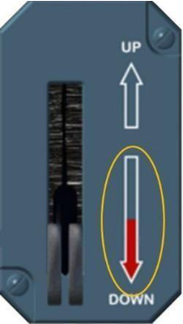
Ответ по ключу базы- A. not locked down when the aircraft is in the landing configuration
12What is indicated by the autobrake DECEL lights?
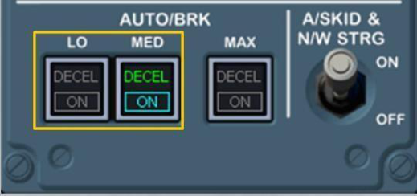
Ответ по ключу базы- A. Airplane deceleration is 80% of selected rate
13You are ready to taxi. You apply the brakes on the rudder pedals and release the PARK BRK. The BRAKES pressure falls to zero. What should you do about it?
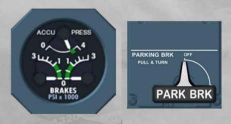
Ответ по ключу базы- B. Nothing as this is normal. The BRAKES pressure indicator only indicates alternate (yellow) brake pressure
14How can the brake accumulator be re-pressurized?
15When should the autobrake be disengaged?
- A. Disengage the autobrake before 20kt to avoid some brake jerks at low speed. The antiskid is deactivated when ground speed is less than 20 kt
16Which hydraulic system supplies pressure to the nose wheel steering?
17The steering handwheels, which are interconnected, can steer the nose wheel up to in either direction.
18The antiskid is deactivated when ground speed is less than:
19What are the requirements to arm the autobrakes?
- A. Green hydraulic pressure available, anti-skid electrically powered, no failure in the braking system and at least one ADIRU is available
20If the autobrake is disconnected due to a system failure after touchdown or after RTO, the crew will hear:
- B. Audio Indicator “Auto Brake Off, Auto Brake Off” made by Synthetic Voice
21The normal brake system uses hydraulic pressure, whereas the alternate system uses hydraulic system.
22If LO or MED modes selected on AUTO BRK PANEL, automatic braking is activated after some delay when:
23There are two triangles for each gear on the ECAM WHEEL page. What do they represent?
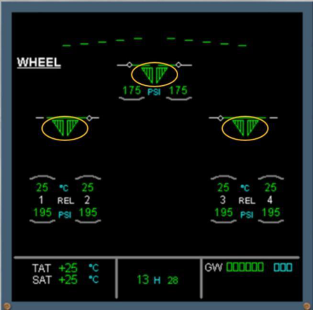
Ответ по ключу базы- B. Each triangle represents the gear position detected by LGCIU 1 or 2
24Both nose and main wheels have fusible plugs that prevent the tires from bursting if they overheat.
25The principle of the anti-skid is:
- B. Speed of each main gear wheel is compared to the aircraft reference speed
26The brake accumulator can supply at least full brake applications.
27The parking brake accumulator is designed to maintain the parking pressure for at least _ hours.
28Green arc over a wheel indication on ECAM WHEEL page indicates:
- A. The hottest brake with a temperature of more than 100°C
29Maximum speed for landing gear retraction is:
30Nose wheel steering control from rudder pedals is not available when:
- C. The pushbutton on either steering handwheel is pressed
31Nose wheel steering by rudder pedals is limited to:
32When both steering hand wheels are operated simultaneously, the signals:
33Look at the picture. What is happening with the brake system?
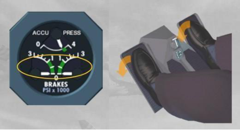
Ответ по ключу базы- A. Nothing. It is normal indication, normal operation
34If MAX mode is selected on AUTO BRK PANEL, automatic braking is activated when:
- C. Ground spoilers are commanded to extend and the aircraft speed is above 40 kt
35Is it possible to reselect automatic braking from LOW to MED or vice versa during ground roll?
36Is it possible to use MAX mode of AUTO BRK for landing?
- B. Yes, during ground roll and after ground spoiler extension you can select MAX mode but it is not recommended
37The alternate brake system uses:
(N) Lights
1How many dome lights are there in the cockpit?
2How many TAXI lights are there?
3How many TAKEOFF lights are there?
4How many RWY TURN OFF lights are there?
5If required, you may use TAXI and TAKEOFF lights simultaneously during ground operation.
6RWY TURN OFF lights go off automatically when landing gear is retracted.
7Beacon switch turns on and off two flashing red lights:
8Wing lights are installed to illuminate:
- B. The leading edge of the wing and the engine intake to monitor ice accumulation
9The strobe lights come on automatically when the main gear strut is not compressed, and:
10If the cabin altitude goes above , the cabin illuminates and NO SMOKING, FASTEN SEAT BELT, EXIT signs come on regardless of SEAT BELTS and NO SMOKING selector switches.
11The strobe lights are installed in the following parts of the aircraft:
12The navigation lights installed in the following parts of the aircraft:
(O) Navigation and Surveillance
1The ON BAT amber light comes on when:
- A. At least one ADIRU is supplied by Batteries or for a few seconds at the beginning of a complete IRS alignment
2The ATT HDG and AIR DATA selectors on the Pedestal switching panel in NORM position indicate that:
- B. ADIRU1 is supplying data to PFD1 and ND1; ADIRU2 is supplying data to PFD2 and ND2
3What action is necessary to recover air data indications on PFD1 if ADR1 is lost?
- C. Switching the AIR DATA knob on the switching panel to CAPT 3
4When the Thrust Levers are moved to the takeoff position, the FMGS updates its position at takeoff using:
- C. The Navigation Database and the Takeoff Runway entered into the MCDU by the pilot
5Cost Index = 0 (zero) corresponds to:
6During a turnaround, you notice that there is a residual ground speed on both NDs. How do you correct this?
- C. It is possible to carry out a fast alignment by turning off and on all 3 ADIRs within 5 seconds
7If the FMGC detects low-navigation accuracy, then:
- B. The enhanced modes of EGPWS are automatically deactivated, while 5 GPWS basic modes remain active
8What sources could be used by the FMGC to compute its own radio position?
9At what height does the RA indication appear on PFD?
10Can the crew depress the RMP NAV pushbutton, and use the RMP for navigation simultaneously with FMGC autotuning?
- B. No, RMP backup tuning supersedes the autotuning function of both FMGCs
11Will the aircraft capture and navigate via the ILS signals, if the LS push button on the FCU is not pushed?
12Selection of the correct takeoff runway on the FMGC prior to each flight is necessary because:
- C. Selection of the correct runway permits the FMGC to update its position at takeoff
13GPWS aural and visual warnings cannot be inhibited.
14The speed scale must be replaced by Back-up Speed Scale in case of:
15All Navaids are normally autotuned by:
16ILS 1 information is displayed on when operating in the rose ILS mode:
17The intruders are classified as:
18When TCAS system will automatically select TA ONLY mode even if TCAS mode selector is in TA/RA position?
19What information will be provided on NDs if the flight crew set the TRAFFIC selector to THRT on ATC/TCAS panel?
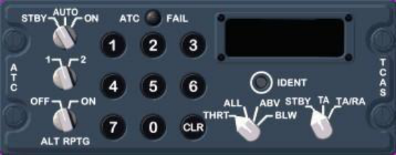
Ответ по ключу базы- A. Intruders are displayed only if a TA or RA is present, and they are within 2700ft above and 2700ft below the aircraft
20During cockpit preparation you need to check the altitude indications on the PFDs. The maximum difference between both PFDs is:
21For RVSM operation, check that the difference between each altitude indication displayed on PFDs (in the QNH reference) and the airport elevation is less than:
22The ROPS is designed to alert the flight crew in the case of potential runway overrun situation for:
23If during final approach the “IF WET: RWY TOO SHORT” amber message displayed on the PFD and the runway condition is wet or contaminated, the flight crew:
24If during final approach, the IF WET: RWY TOO SHORT amber message is displayed on the PFD and the runway condition is dry, the flight crew:
25If during final approach, the RWY TOO SHORT red message is displayed on the PFD, the flight crew:
26The ATSAW function does not modify the TCAS function.
27The ATSAW function enables:
- C. to display enhanced information on the surrounding traffic
28The ATSAW detection capability is limited to aircraft flying within a maximum range of:
29The ATSAW detection capability is limited to aircraft flying within:
30The ATSAW detection capability is limited to aircraft flying within a maximum altitude range of:
(P) Oxygen
1When does passenger oxygen flow start?
2What is indicated by a missing green thermal plug during an exterior preflight?
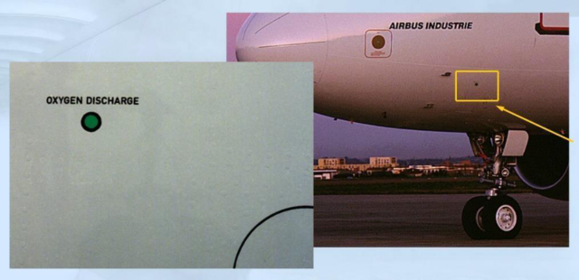
Ответ по ключу базы- A. The crew oxygen system overpressure or thermal discharge
3Approximate duration of the passenger oxygen generators to produce oxygen?
4What is the main difference between crew and passenger oxygen systems?
- B. Crew is supplied by an oxygen cylinder while passengers by chemical generators
5What will you do to supply crew's masks by the low-pressure oxygen?
- B. Push CREW SUPPLY push button on the overhead panel
6What happens if the mask is used with the selection at 100% position?
7The crew masks may be used in case of:
- A. Depressurization or smoke and fumes with selection to 100% position
8The passenger mask may be used in case of:
9At what cabin altitude should the passenger oxygen masks drop?
10What happens when the mask is used with the selection at N position?
11Illumination of the SYS ON light is an indication that:
- B. The control of passenger mask doors activated, either manually or automatically
12What will depressing the guarded MASK MAN ON p/b do?
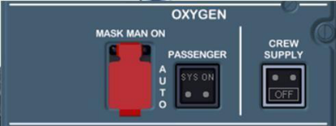
Ответ по ключу базы- B. It manually sends a signal to open the oxygen mask doors
13The Portable Breathing Equipment (Smoke Hood) provides a breathable atmosphere for a minimum:
14May the PBE be used in smoke and\or fumes condition?
15In order to cut off the mask microphone after the oxygen mask has been used the crewmember has to:
- B. Close the mask stowage box and press “RESET/TEST” control slide button
(Q) Pneumatic
1The AUTO position of the X BLEED selector opens the crossbleed if:
2On the ground high pressure hot air is supplied from:
- B. Engine bleed system, APU and external high pressure ground power unit
3The air is bled from:
- C. IP or HP stage. It is automatically controlled by the system
4Bleed air from the engine to the users.
- B. Passes through precooler heat exchanger, then distributed
5If bleed air is being supplied by the APU or if one pack fails, pack flow will change to what rate?
6On the ground with bleed configuration depicted on the picture which source of air will supply bleed system?
7ECAM BLEED page: when is the GND symbol displayed?
8AIR BLEED from the engines is cooled in a precooler by:
9A320\A321 Pneumatic System Leak Detection loops detect any overheating near the hot air ducts in the:
10How many Bleed Monitoring Computers (BMC’s) are installed on board of the aircraft?
11If one BMC fails:
- C. The other one takes over most of the monitoring functions
12With the X-BLEED rotary selector in the “Auto” position:
- C. The crossbleed valve is open if the APU bleed valve is open
(R) Water/Waste
1Where is the water and waste control panel located?
2In flight, the water system is pressurized by the bleed air.
3Where is the water and waste service panel located?
4Waste water from the galleys and lavatories drains overboard through two heated drain masts.
5Toilet’s waste .
- C. drains to the common tank and services on the ground via a single service panel, located under the fuselage
6In flight the waste and water are discharged by:
7On ground the waste and water are discharged by:
(S) APU
1To start the APU:
2When the APU Master Switch is released, a normal APU shutdown occurs:
3According to the APU Start sequence, selecting the APU START pushbutton on will:
- B. Energize the starter, the ignition turns ON. When N = 60% the starter is de-energized and the ignition turns OFF
4The APU has an integral independent lubrication system for lubrication and cooling.
5When the APU MASTER SW is selected ON:
- A. Electric power goes to the APU system, the ECB performs a power-up test, air intake flap opens, the fuel isolation valve opens, if no fuel tank pump is running the fuel pump operates
6During refuel/defuel procedures, APU starts or shutdown are permitted with next restriction:
- B. If a fuel spill occurs, perform a normal APU shutdown
7The basic element of the APU is _ that delivers mechanical shaft power for driving the accessory gearbox (electrical generator, starter, etc.) and produces bleed air (engine starting and pneumatic supply).
8During the APU start sequence the APU AVAIL memo is displayed on the E/WD at approximately.
9The APU starter engages if the air intake is fully open and the MASTER SW and the START pushbutton are ON.
10In case of engine failure APU BLEED must not be used:
11The APU cannot be shut down from outside.
12An APU automatic shutdown may be caused by:
13APU Bleed maximum altitude to assist engine start:
14Maximum altitude for air conditioning and pressurization (dual pack operation):
15APU Normal Restart Limit envelop:
16APU start attempts are limited:
- A. After three consecutive APU start attempts, the flight crew must wait 60 min before a new start attempt
17To start APU press APU MASTER SW pb-sw first. Wait at least 3 s before selecting APU START pb-sw. What is the reason for delay?
- B. Electric power goes to the APU system; the ECB performs a power-up test
(T) Doors
1The cockpit sliding window is closed and locked. How can you check it?
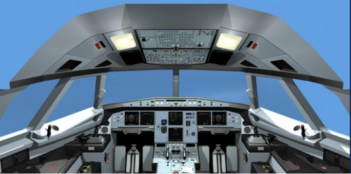
Ответ по ключу базы- C. The red ring below the release button should be in view
2What does illumination of this red light represent on the main cabin door?
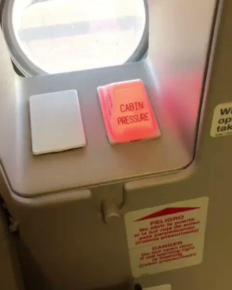
Ответ по ключу базы- B. This indicates that the cabin is still pressurized and the cabin door should not be opened
3Opening a passenger door from the outside disarms the door and the escape slide.
4The cargo doors are powered by:
5Look at the picture. What is the scope of this device?
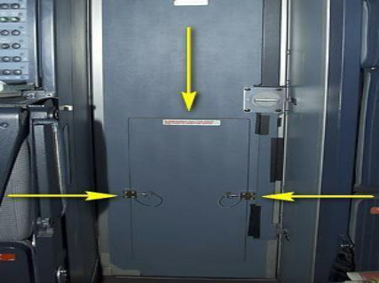
Ответ по ключу базы- A. This is escape panel which enables the flight crew to evacuate the cockpit in case of emergency, when the door is jammed
6The cockpit door can be opened both from inside and outside.
7This is Cockpit Door Locking System panel (CDLS). What are these holes for?
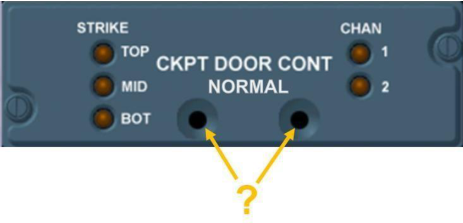
Ответ по ключу базы- B. Pressure sensors which unlock the cockpit door in case of decompression
8What happens with the cockpit door if electrical power fails?
9The forward and aft cargo doors can be opened from:
10The cargo doors are powered by:
11When opened in an emergency, the passenger doors:
- A. Are driven by the damper actuator for the automatic opening
12Opening an emergency overwing exit will:
- B. Automatically inflate the slide off the trailing edge of the wing
(U) Engines
1The FADEC is normally powered by:
2During an automatic start sequence selecting the ENG MASTER switch to on:
3The ENG page is automatically called on ECAM SD when:
4The A/THR can be armed on the ground:
- A. By setting the thrust levers to TO/GA or FLEX for takeoff
5If a thrust levers are set between two detents the FADEC selects the rating limit:
6FADEC has the following Idle Modes:
- B. Minimum (Modulated) Idle, Approach Idle, Reverse Idle
7You are just about to take off. You have not inserted a FLEX temperature. Can you still takeoff?
8During an engine start sequence at some point the gray background on N2 indication had disappeared. What does it mean?
- B. That the start sequence has finished and all engine parameters have stabilized
9What is required for a FADEC to compute a reduced thrust setting?
- C. A FLEX temperature must be entered on the MCDU TAKE OFF PERF page
10Using manual thrust, the thrust lever position will determine the thrust setting for the engine.
11Is there any mechanical linkage between the thrust levers and the engines?
12During a manual start, how is the start valve opened?
- B. By depressing the ENG MAN START pushbuttons on the overhead panel while the ENG MODE SELECTOR is in IGN/START position
13Name the main engine parts shown in the illustration (by numbers 1, 3, 5 and 7):
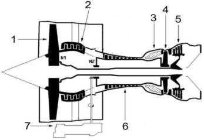
Ответ по ключу базы- A. 1 - Fan, 3 - Combustion chamber, 5 - LP turbine, 7 - Accessory gearbox
14The MANUAL ENGINE START procedure is recommended after aborting a start, caused by:
15Name the main engine parts shown in the illustration (by numbers 2, 4 and 6):
16Minimum engine oil quantity required during preliminary cockpit preparation (CFM 56-5B)
- A. At or above 9.5qt + estimated consumption (average estimated consumption ~ 0.5 qt/h)
17Minimum engine oil quantity required during preliminary cockpit preparation (CFM LEAP-1A)
- A. Highest value of 10.6qt or 8,9 + estimated consumption (max estimated consumption~ 0.45qt/h)
18Does the FADEC always provide EGT overlimit protection during automatic start?
- B. No, EGT overlimit protection is only available on CFM LEAP-1A engines
19Both CFM 56-5B and CFM LEAP -1A engines are:
20The engine reverse pivoting blocker doors divert the airstream from the to direction.
21Which hydraulic system actuates Thrust Reverser doors?
- C. The green circuit powers the doors on ENG 1, the yellow on ENG 2
22Can the flight crew activate engine reversers in flight?
- C. No, both main gears must be compressed in order to activate thrust reversers
23During the automatic start sequence of ENG 2, you notice that only igniter B is powered. Is it normal?
24In what abnormal situations the crew must abort an automatic engine start?
- A. An engine stall, tail pipe fire, electrical power supply is interrupted during the start sequence (indicated by the loss of ECAM DUs)
25The engine starter must not be run when N2 is above %
26A standard automatic start that includes up to start attempts, is considered one cycle.
27For ground starts (automatic or manual), a pause is required between successive cycles.
28A cooling period is required, subsequent to failed cycles.
- B. 15 min / four (CFM56) or 15 min / three (CFM LEAP-1A)
29Maximum Reverse Thrust should not be used:
30Idle Reverse Thrust is permitted down to:
31Is it allowed to use Maximum Reverse Thrust at low airspeed?
32Why is it not recommended to use of high levels of reverse thrust at low airspeed?
- C. The distortion of the airflow, caused by gases reentering the compressor, can cause engine stalls that may result in excessive EGT
33On snow-covered grounds, the reversers should be stowed when the aircraft speed reaches:
34Is there any crosswind limitation for engine start on CFM LEAP-1A fitted aircraft (A320\A321 NEO):
- B. The engine is able to start in crosswind up to 45kt
35Is there any crosswind limitation for engine at takeoff on CFM LEAP-1A fitted aircraft (A320\A321 NEO):
- C. Engine crosswind limit at takeoff is 35kt (gust included)
36It is possible to perform SOFT GO-AROUND with one engine inoperative on CFM LEAP-1A fitted aircraft (A320\A321 NEO):
37What is the thrust target in case of a soft go-around? (A320/A321 NEO)
- B. Either the thrust to target a V/S of approximately 2300 ft/min or TOGA, if the 2300 ft/min target cannot be reached